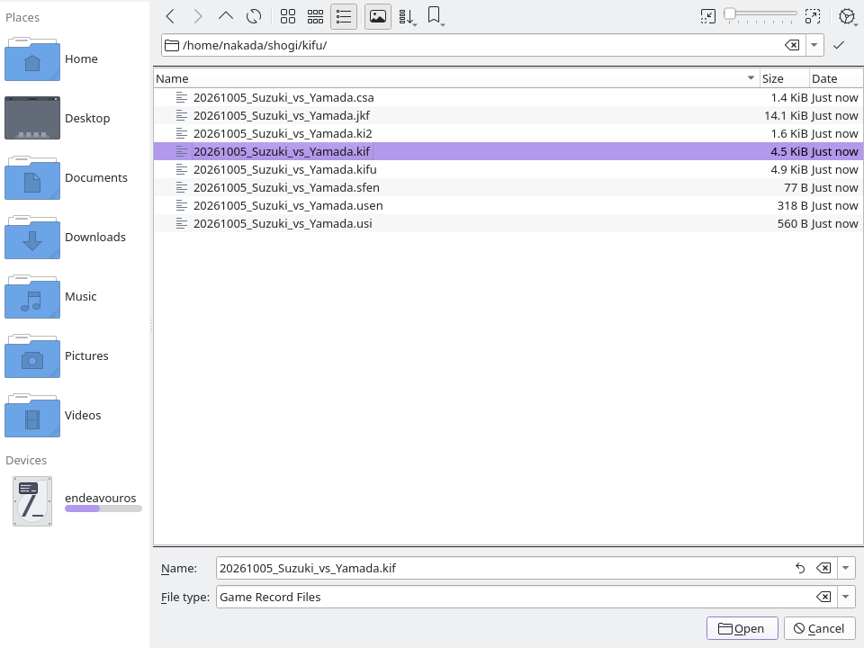
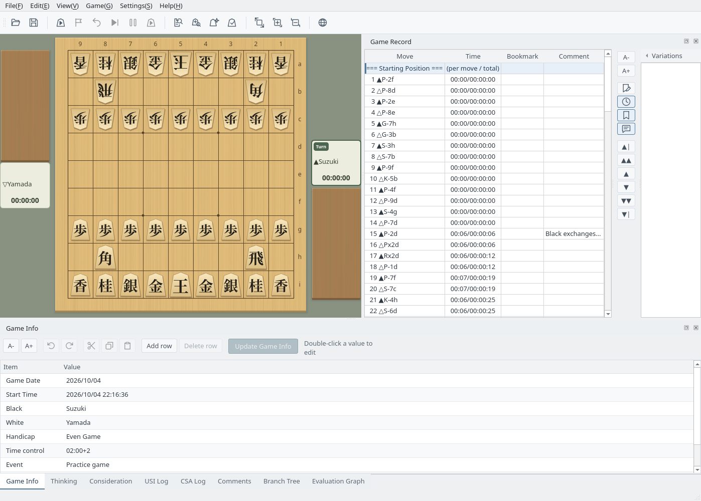
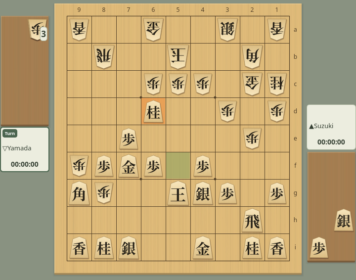
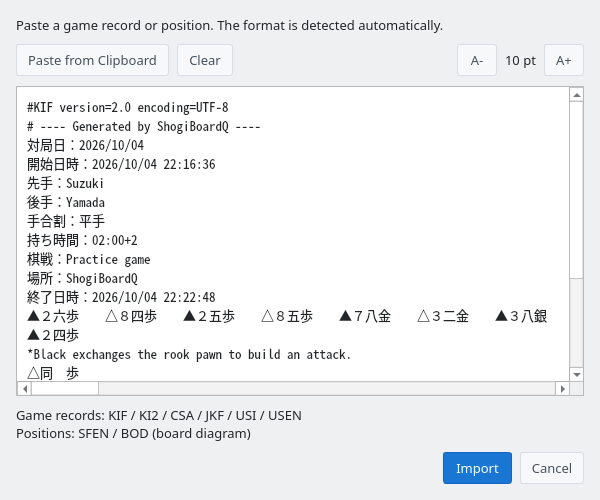

Load, save, and copy game records in multiple formats
Screenshots were captured on Linux with the English interface.
Load major game record formats, including records with variations
The following game record formats can be loaded.
| Format | Extension | Description |
|---|---|---|
| KIF | .kif .kifu | The standard Kifu for Windows format, recording move numbers, moves, and time spent |
| KI2 | .ki2 .ki2u | A compact KIF format that records moves horizontally |
| CSA | .csa | The Computer Shogi Association's standard format, using coordinate notation |
| JKF | .jkf .json | A JSON game record format that represents variations in a JSON structure (for .json files and files with an unfamiliar extension, the format is detected from the content) |
| USI / SFEN | .usi .sfen | A USI move sequence or an SFEN position without moves |
| USEN | .usen | USEN compression for compact game record encoding |
Choose File → Open… to open the file selection dialog (Open Game Record File). Use File type to narrow the formats shown.

File selection dialog: choose KIF, KI2, CSA, JKF, USI, SFEN, or USEN files
After loading, the game record area shows moves and time spent, and the board shows the starting position. Use the record list or navigation buttons to move to any position. Game information such as player names, date, and handicap is read automatically.

Loaded game record: moves and time spent in the move list
Each example records the same three moves from the standard position: 7g7f, 3c3d, and 2g2f, without a game result. The formats differ in whether they can record player names, time spent, and other information.
手合割：平手
先手：鈴木
後手：山田
手数----指手---------消費時間--
1 ７六歩(77) ( 0:02/00:00:02)
2 ３四歩(33) ( 0:02/00:00:02)
3 ２六歩(27) ( 0:02/00:00:04)先手：鈴木
後手：山田
▲７六歩 △３四歩 ▲２六歩'CSA encoding=UTF-8
V3.0
N+鈴木
N-山田
PI
+
+7776FU
T2
-3334FU
T2
+2726FU
T2{
"header": {
"先手": "鈴木",
"後手": "山田"
},
"moves": [
{},
{"move":{"from":{"x":7,"y":7},
"to":{"x":7,"y":6},
"color":0,"piece":"FU"}},
{"move":{"from":{"x":3,"y":3},
"to":{"x":3,"y":4},
"color":1,"piece":"FU"}},
{"move":{"from":{"x":2,"y":7},
"to":{"x":2,"y":6},
"color":0,"piece":"FU"}}
]
}position startpos moves 7g7f 3c3d 2g2f~0.7ku2jm6y2.Save game records in six formats
Choose File → Save As… to save the record in your preferred format. If you omit the extension, the selected filter supplies it. If you enter an extension, that extension determines the output format.
| Format | Extension | Encoding |
|---|---|---|
| KIF Format | .kif / .kifu | Shift_JIS / UTF-8 |
| KI2 Format | .ki2 / .ki2u | Shift_JIS / UTF-8 |
| CSA Format | .csa | UTF-8 |
| JKF Format | .jkf | UTF-8 |
| USEN Format | .usen | UTF-8 |
| USI Format | .usi | UTF-8 |
KIF, KI2, JKF, and USEN can save variations. CSA and USI save only the main line; KI2 does not save time spent. USI and USEN omit player names, comments, and time spent, and USEN supports only a limited set of game results. Converting CSA times to KIF or JKF discards fractions of a second. Saving a record with time spent in USEN asks for confirmation and lists what will not be saved. Copying a record with variations in CSA or USI format shows in the status bar that only the main line was copied.
When saving to .kif or .ki2 (Shift_JIS), if player names or comments contain characters that Shift_JIS cannot represent (such as some Simplified or Traditional Chinese characters or emoji), ShogiBoardQ shows those characters and asks whether to save as UTF-8. A file saved as UTF-8 records "encoding=UTF-8" on its first line. To always save as UTF-8, choose .kifu or .ki2u.
Handicap game records name the players “下手” (Shitate, the handicap receiver) and “上手” (Uwate, the handicap giver), as Kakinoki’s KIF format does. In KIF and KI2, the hands and the side to move in the position diagram (“上手の持駒：”, “下手の持駒：”, “上手番”) and the final line (“まで30手で上手の勝ち”) use the same names. In CSA format, Shitate’s name goes on the “N+” line and Uwate’s on the “N-” line. If the game information lists the players as Black and White (先手 and 後手), as in records made with some other programs, the diagram and the final line keep 先手 and 後手 so that one record does not mix the two styles. Records in either style can be loaded.
For CSA files containing multiple games separated by a line with “/”, only the first game is loaded.
Trailing game-result tokens in USI records are extensions for saving records. They are not part of the USI “position” command used to communicate with engines.
Format references: KIF, move notation used in KI2, CSA V3.0, JKF, USI and SFEN, and USEN.
Choose File → Save to overwrite the most recently loaded or saved file in the format determined by its extension. Save As opens when no destination is set, after importing from the clipboard or position collection, or after loading a .sfen file. Select the destination for automatic saving after a game in the game dialog.
If the game record has unsaved changes, you are asked to save before loading another record, starting a game with a new record, resetting the board, or exiting the application. Choosing Cancel, canceling the save dialog, or a failed save stops the operation.
Copy records, positions, and board images, or paste game records
Choose Edit → Copy Game Record to copy the current record to the clipboard in various formats for use in other applications.
| Menu Item | Content |
|---|---|
| KIF Format | Copy the entire game record in KIF format |
| KI2 Format | Copy the entire game record in KI2 format |
| CSA Format | Copy the entire game record in CSA format |
| USI Format (Up to Current Move) | Copy moves up to the displayed position in USI format |
| USI Format (All) | Copy the entire game record in USI format |
| JSON Game Format | Copy the entire game record in JKF (JSON) format |
| USEN | Copy the entire game record in compressed USEN format |
Choose Edit → Copy Position to copy the current position to the clipboard.
| Menu Item | Content |
|---|---|
| SFEN Format | Copy the current position as an SFEN string |
| BOD Format | Copy the current position as a text board diagram (BOD). For handicap game records, the hands and the side to move use 下手 and 上手 (Shitate and Uwate), as in saved records |
Choose Edit → Copy Board Image to copy the current board as an image to the clipboard, ready to paste into a blog or commentary article.

Copy board image: put an image of the board on the clipboard
Choose Edit → Paste Game Record… to open the paste dialog. Paste a record into the text area or click Paste from Clipboard, then click Import; its format is detected automatically.

Paste dialog: automatic detection of KIF, KI2, CSA, USI, JKF, USEN, SFEN, and BOD
| Format | Detection Criteria |
|---|---|
| KIF | Contains 手数---- or a line beginning with a move number and destination. The words 手数 or 指し手 alone do not establish the format |
| KI2 | A move line beginning with ▲, △, ▽, ☗, or ☖ followed by a destination |
| CSA | A V2/V3 version or comment line, PI/P position data, player names or game metadata, or a move line beginning with + or - followed by digits |
| USI | A line beginning with position, startpos, or sfen, or an SFEN position followed by moves. Also accepts startpos moves ... |
| JKF | JSON beginning with { or [ is checked as JKF. Import requires a JKF object; a JSON array alone is rejected |
| USEN | Matches the USEN structure of move numbers and encoded sequences separated by ~. A ~ inside a comment or URL is insufficient |
| SFEN | A position string with four fields: board, turn, pieces in hand, and move number. Prefixes such as sfen are detected as USI |
| BOD | A position diagram with hand headings, borders, or square notation, without a move list |
Unrecognized text is tried as KIF. The content is validated after format detection, and an error is shown if it cannot be imported.